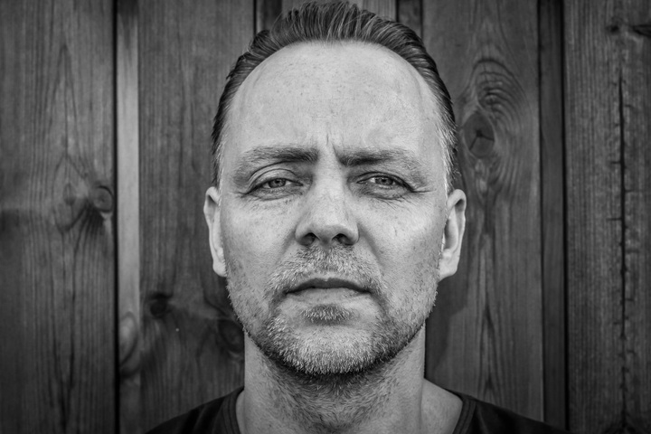

Javier Torres García
Ingeniero en ciberseguridad especializado en inteligencia artificial, Javier investiga cómo los algoritmos pueden anticipar y mitigar amenazas digitales en tiempo real.
Ingeniero en ciberseguridad especializado en inteligencia artificial, Javier investiga cómo los algoritmos pueden anticipar y mitigar amenazas digitales en tiempo real.
Consultor en ciberseguridad industrial, Carlos trabaja diseñando estrategias de protección para infraestructuras críticas, como redes eléctricas y sistemas de transporte.
Experta en análisis de vulnerabilidades y hacking ético, María ha liderado auditorías en grandes corporaciones, ayudándolas a protegerse frente a ciberataques avanzados.
Investigadora en ciberinteligencia, Elena monitoriza foros clandestinos y dark web para identificar amenazas emergentes y patrones de cibercrimen global.
Abogada y especialista en derecho digital, Laura asesora sobre legislación en ciberseguridad y privacidad, garantizando el cumplimiento normativo en empresas tecnológicas.
Emprendedor y fundador de una startup de ciberseguridad, David desarrolla soluciones innovadoras para proteger pequeñas y medianas empresas contra ciberataques.